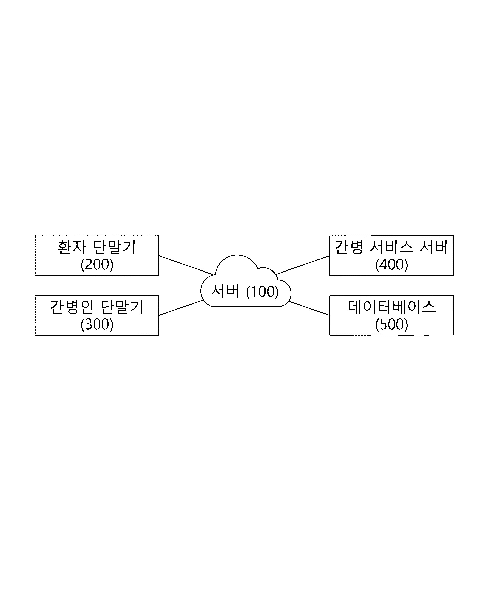

프로젝트
-
지방자치단체 행정 업무를 돕는 AI 에이전트
2026년 3월~현재
AI 에이전트 프로토타입 개발을 관리했습니다. 요청에 필요한 정보가 빠져 있으면 다시 묻고, 관련 행정 안내를 찾아 출처와 함께 답변을 작성하도록 대화 흐름을 설계했습니다.
 원본 크기로 보기
원본 크기로 보기
솔리데오 프로젝트 제출 당시의 데모 화면. -
이차전지 양극재의 금속 이물 검출
2025년 1~5월
공정 센서 측정값과 금속 이물 검사 결과를 분석했습니다. 두 데이터를 생산 로트 기준으로 연결해 검출 모델의 학습 데이터를 구성하는 방법을 검토했습니다.
 원본 크기로 보기
원본 크기로 보기
가상 계측 분석에서 산출한 공정 변수 중요도. -
압연 후 후판의 휨 예측
2024년 12월~2025년 11월
압연 라인 영상에서 분석할 프레임을 고르고, 후판을 분할해 아래쪽 윤곽선을 추출하는 작업에 참여했습니다. 이 윤곽선으로 곡률을 측정해 이후 압연 과정에서 후판 끝이 어느 방향으로 휘는지 예측했습니다.
 원본 크기로 보기
원본 크기로 보기
포스코 프로젝트 발표 자료에 사용한 분석 흐름도. -
환자 맞춤형 간병 용품 추천
2023년 7~12월
환자에게 필요한 돌봄, 간병 환경, 상품 정보를 바탕으로 용품을 추천하는 시스템 개발에 참여했습니다. 관련 공개 출원에 공동 발명자로 등재되어 있습니다.

원본 크기로 보기국내 특허 출원 10-2023-0185772의 시스템 도면. -
환자와 간병인을 위한 맞춤형 정보 제공
2022년 9월~2023년 1월
환자와 간병인을 연결하는 모델 개발에 참여했습니다. 팀은 환자·간병인 프로필, 위치, 과거 만족도를 활용해 적합한 간병인을 추천하도록 모델을 설계했습니다. 관련 등록 특허의 공동 발명자입니다.
 원본 크기로 보기
원본 크기로 보기
국내 등록 특허 10-2635315의 추천 흐름도.

연구
특허
-
마케터를 위한 데이터 분석 지원
2026
-
간병인과 환자 매칭
2024
-
간병 용품 추천
2023년 출원
수업 조교
-
머신러닝 1 (DSS6003)
2025년 2학기
-
머신러닝과 산업 응용 (IIE3104-01)
2025년 2학기
-
머신러닝 2 (DSS6017)
2025년 1학기
학력
-
연세대학교
2024년~현재
-
가톨릭대학교
2018~2024년
연구 경력
-
연세대학교 System Intelligence Lab
2024년~현재
-
가톨릭대학교 Applied AI Lab
2022~2024년